Lab 2 Amazon Web Services (AWS) Setup Instructions
PPOL 5206 Spring 2024
Make sure that you are connected to the Saxanet WiFi network and not the GuestNet network. SSH (TCP port 22) is blocked on GuesNet which means if you are on GuesNet you wil not be able to connect to your cloud VMs or clone repos from GitHub via SSH. Use SaxaNet.
Follow these instructions step-by-step to setup your AWS environment. The screenshots may look a bit different than what you are seeing, but the flow is the same.
You can click on any screenshot on this page to see its full size version.
Task 1: Accept the Invitation to join the AWS Classroom (the first time)
In your student email inbox, you will have an email from AWS Academy with the subject Course Invitation.
Open the email. Click on the Get Started button as shown in the screenshot below. 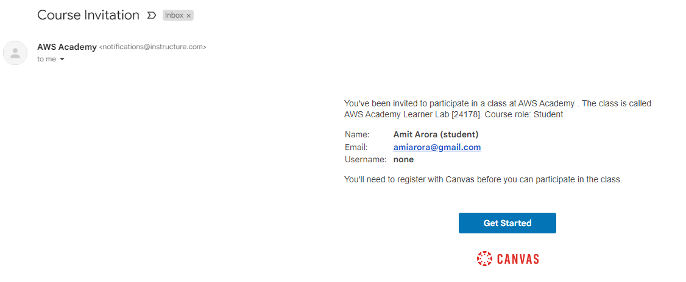
Click on the Create My Account button to create a new Canvas Account (note that this canvas account is different from your existing Georgetown canvas account). 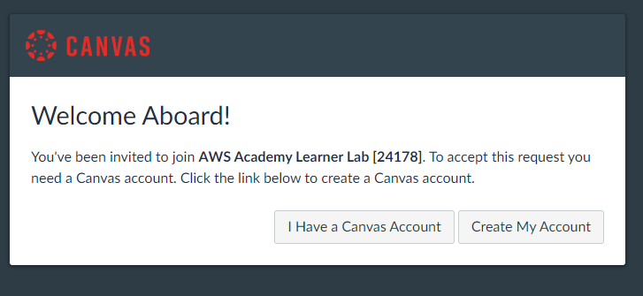
Register your new account. 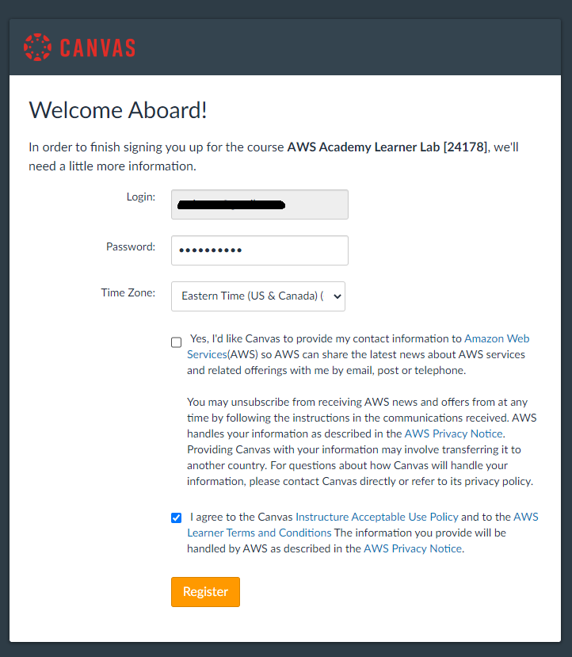
You should now be logged into AWS Academy Learners Lab and seeing a screen like the one shown below. Click on Learners Lab 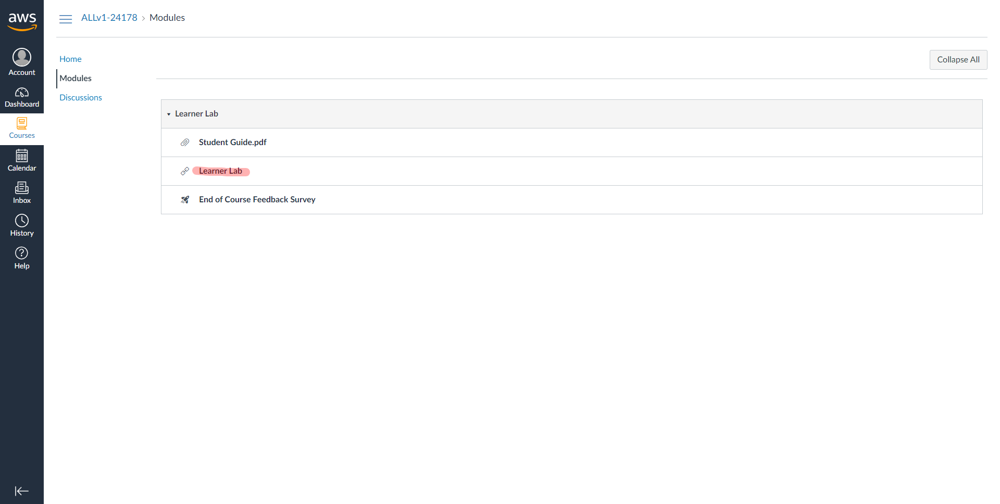
Scroll all the way to the bottom of the page and accept the Terms & Conditions. 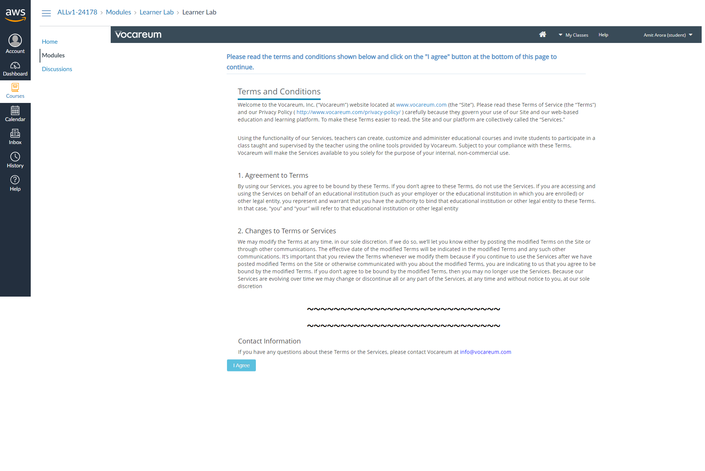
You are now being logged in into the AWS Console. Notice the ⬤ adjacent to the word AWS towards the top left of the page. This indicates that the lab (i.e. the AWS resources) have not yet started. Click on the play button along side Start Lab on the to top right corner of the page to start the lab. 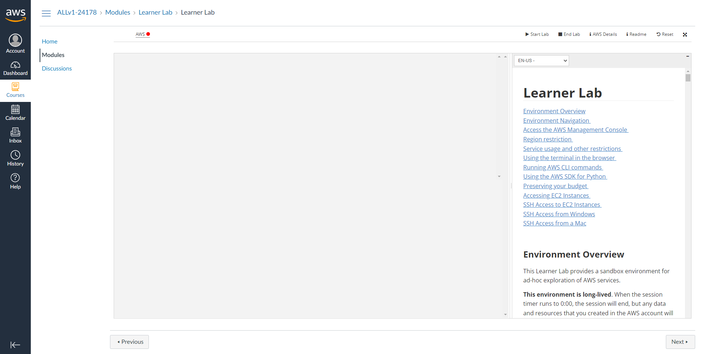 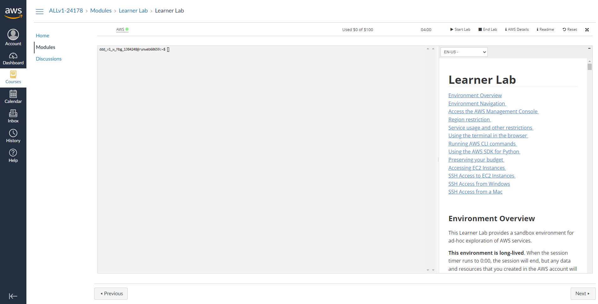
Each lab session that you start is at most 4 hours and you can see a timer showing the remaining time (hh:mm) on the ribbon along with the remaining budget out of the $100 allocated to each account. 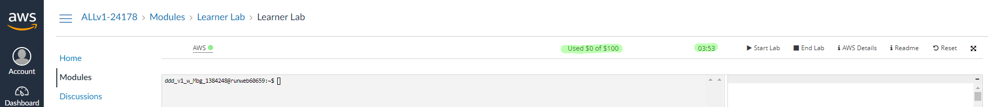
This environment is long-lived. When the session timer runs to 0:00, the session will end, but any data and resources that you created in the AWS account will be retained. If you later launch a new session (for example, the next day), you will find that your work is still in the lab environment. Running EC2 instances will be stopped and then automatically restarted the next time you start a session. SageMaker notebook instances will be stopped, but not restarted the next time you start a session.
{kind=link}
{kind=link}
{kind=link}
{kind=link}
{kind=link}
{kind=link}
{kind=link}
{kind=link}
Monitor your lab budget in the lab interface above. Whenever you have an active lab session, the latest known remaining budget information will display at the top of this screen. This data comes from AWS Budgets which typically updates every 8 to 12 hours. Therefore the remaining budget that you see may not reflect your most recent account activity. If you exceed your lab budget your lab account will be disabled and all progress and resources will be lost. Therefore, it is important for you to manage your spending. Read about how to preserve your budget.
Login into the AWS Console
The AWS Console is your entry point into the AWS cloud.
Click on the AWS link alongside the ⬤. 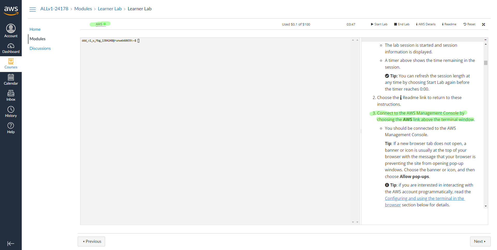
A new tab will open in your browser, this is the AWS Console. 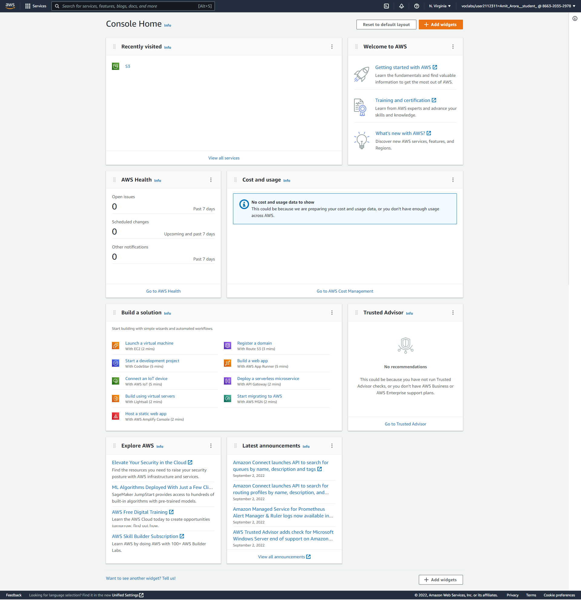
Note the URL in your browser’s address bar, it will start with the name of the AWS region (such as us-east-1) in which your cloud resources are hosted.
Note the username on the top right hand corner, this is your Federated Identity. Also note that the you did not have to provide any credentials (username/password) to login into the AWS console. How did this happen? 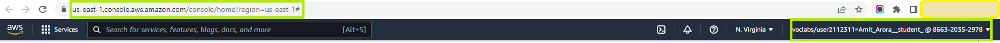
{kind=link}
{kind=link}
{kind=link}
The SSO link to login into the AWS Console (Optional)
Click on the AWS Details link on the ribbon, this will refresh the text in the panel below, click on AWS SSO button that is now visible on this panel. SSO stands for Single Sign-On i.e. you do not need to provide your credentials everytime you want to login into this page. Clicking on the AWS SSO will download a file on your laptop, keep this file somewhere handy as you will need it in future. 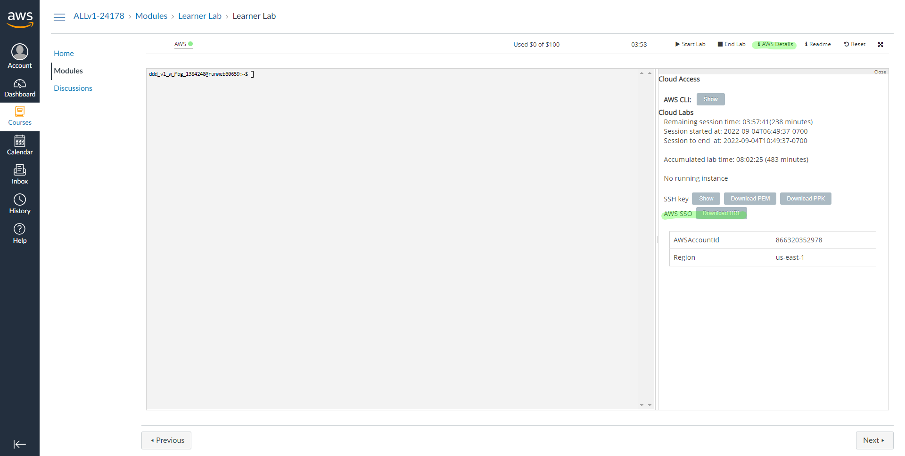
Copy the contents of the ssourl.txt file that you just downloaded, open an incognito browser window and paste them into the address bar of this incognito browser window. This will log you in into the AWS Console. You will notice that the URL in the address bar changes to the same URL as you had in the previous step.
{kind=link}
The credentials in the SSO link are short-lived, meaning that they are only valid for a short duration and therefore you cannot use them for a different session.
Saving AWS CLI credentials for programmatically talking to other AWS services
Click on the AWS CLI button on the AWS Details. 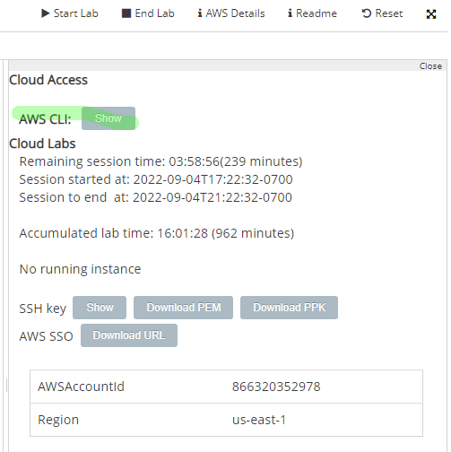
Click on the Show button. Copy paste the contents you see in a text editor on your laptop and save the file, we will be using these credentials from your EC2 Instance to connect to other AWS services. 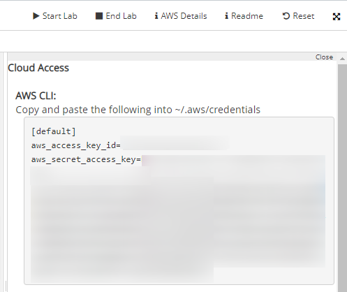
{kind=link}
Logging into AWS Academy at a later time
- Open the https://www.awsacademy.com/LMS_Login link in your browser window and click on Student Login.
{kind=link}
Logging into the AWS Console at a later time
To access the AWS Console in the future, login to https://www.awsacademy.com/LMS_Login, go to Learner Lab -> Modules -> Start Lab.
If you already had an AWS account prior to logging into AWS Academy you would need to login into the AWS Educate AWS account via an Incognito Browser Window.
Task 2: Upload your Public key to AWS (do this one time only)
Login to your AWS Console if you are not already logged in.
Type Key Pairs in search bar on the top of the page. 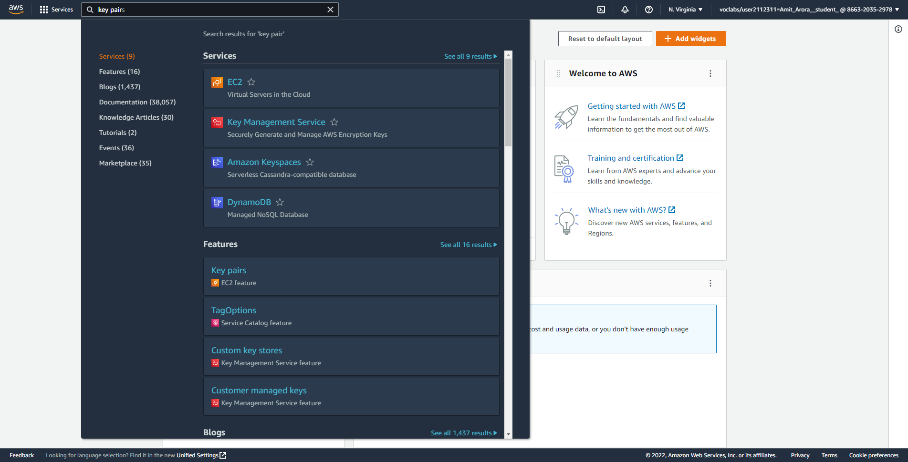
Import your SSH key (that you created in the previous lab) as a new AWS Key pair. This keypair will be used for SSHing into EC2 instances that we will be creating. 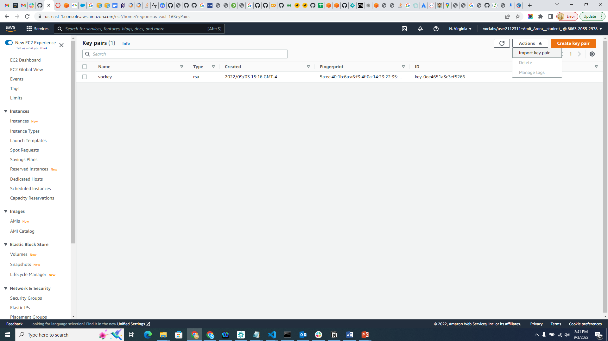 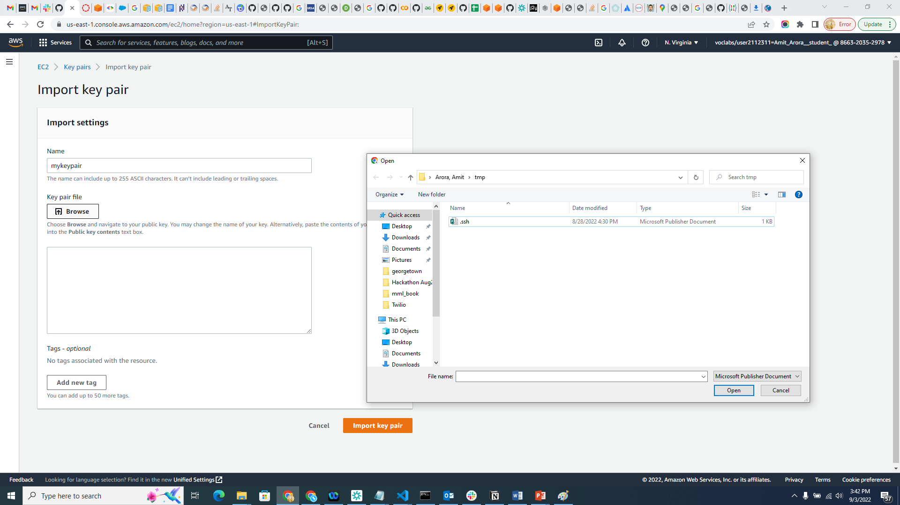
Give an appropriate name to your keypair. The contents of the keypair will get imported as shown in the screenshot below. 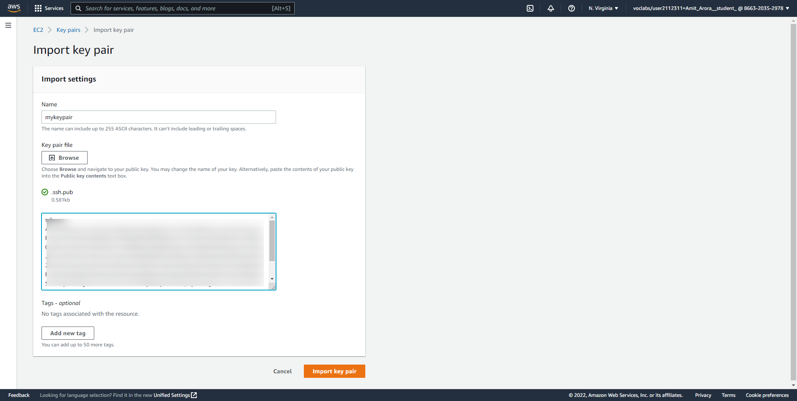
Once the keypair is successfully created it will be visible in the keypair list. You will notice that there is an existing pre-created keypair called vockey as well. 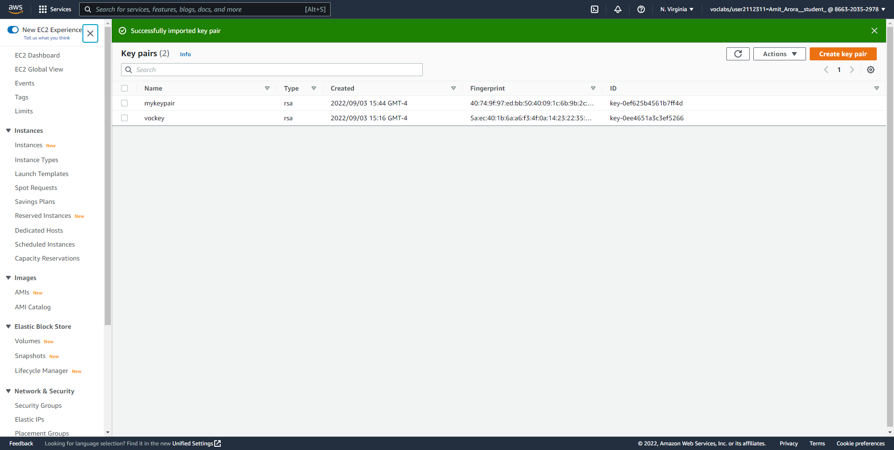
{kind=link}
{kind=link}
{kind=link}
{kind=link}
{kind=link}
Task 3: Create a Security Group (do this one time only)
A security group controls the traffic that is allowed to reach and leave the resources that it is associated with. For example, after you associate a security group with an EC2 instance, it controls the inbound and outbound traffic for the instance.
Create a new security group to allow SSH traffic (TCP, port 22) from anywhere on the Internet (and this includes your laptop). Go to Security Group from the search bar to create a new security group. 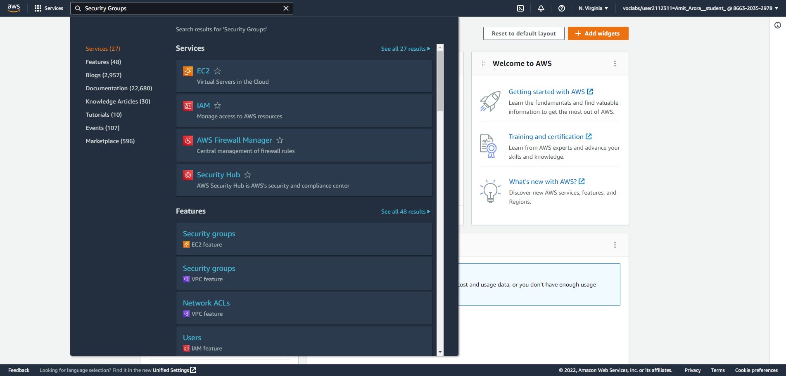 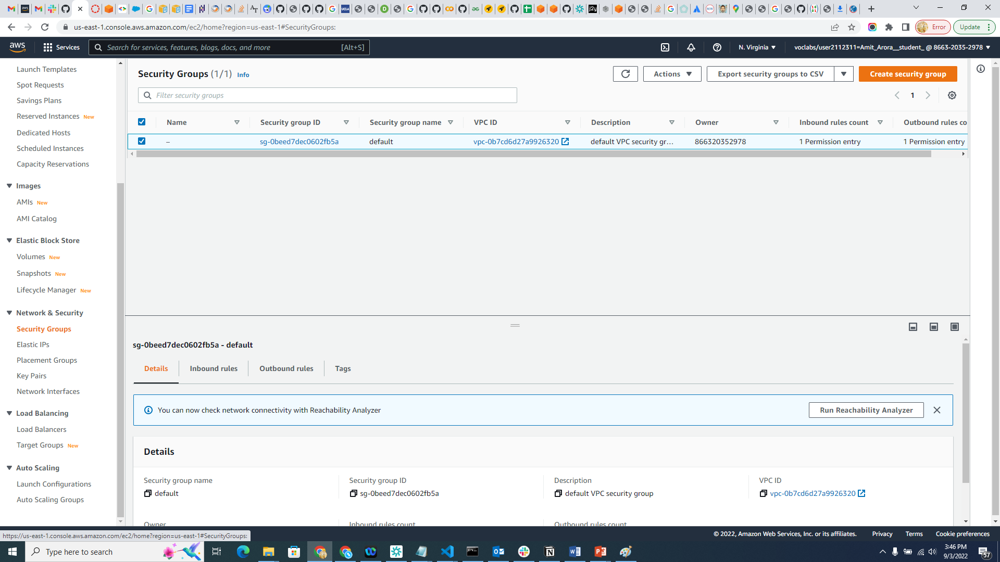
Name the new security group open ssh port. Fill in the details for Inbound Rules as shown in the screenshot below, Type=SSH, Protocol=TCP, Port range=22, Source=Anywhere. 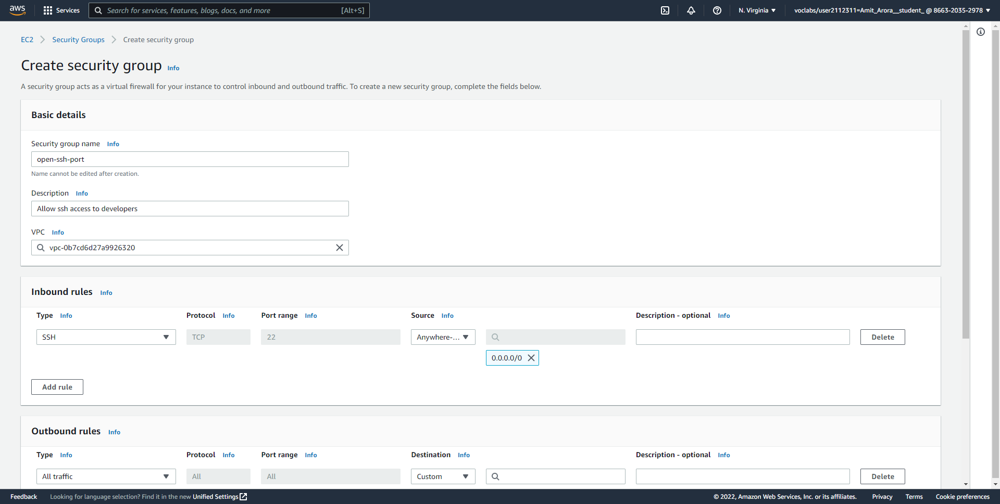
Once the Security Group is created it will appear in the security group list. 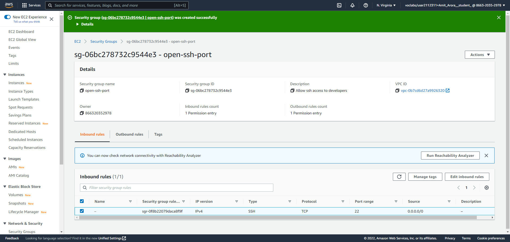
{kind=link}
{kind=link}
{kind=link}
{kind=link}
Task 4: Create an EC2 Virtual Machine
Amazon Elastic Compute Cloud (Amazon EC2) is a web service that provides secure, resizable compute capacity in the cloud.
We use the terms EC2 Instance, EC2 VM, Instance, VM interchangeably throughout this document to refer to the EC2 virtual machine being created and used.
Type EC2 in the search bar on the AWS console and then click on Launch Instances. 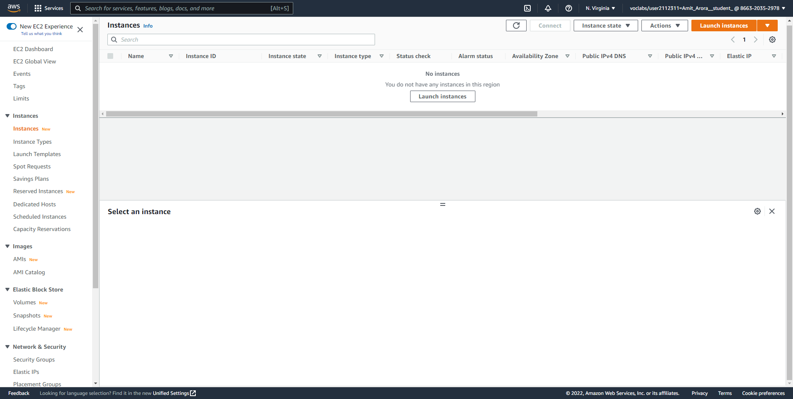
Give an appropriate name to your EC2 VM instance. 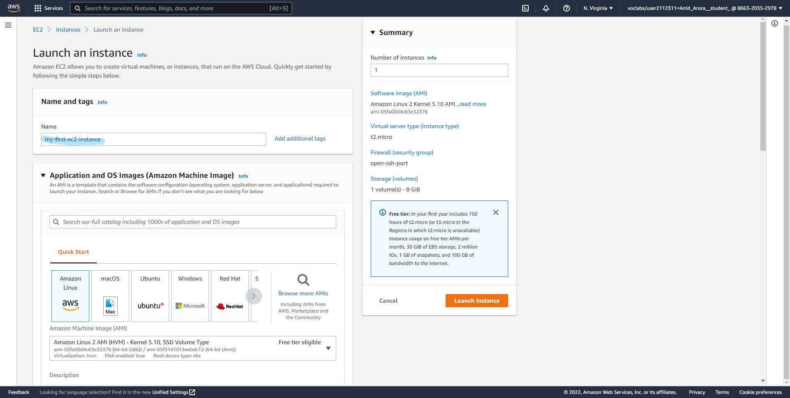
From the Key pair drop down select the key pair that you created in the previous steps. 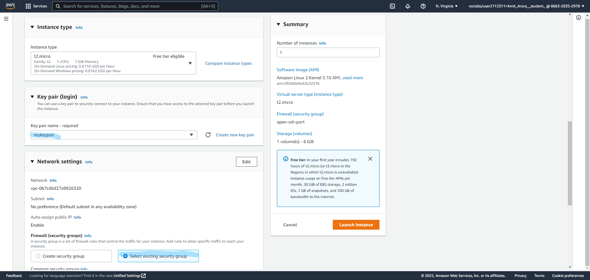
From the Firewall (security groups) drop down select the security group that created in the previous steps. 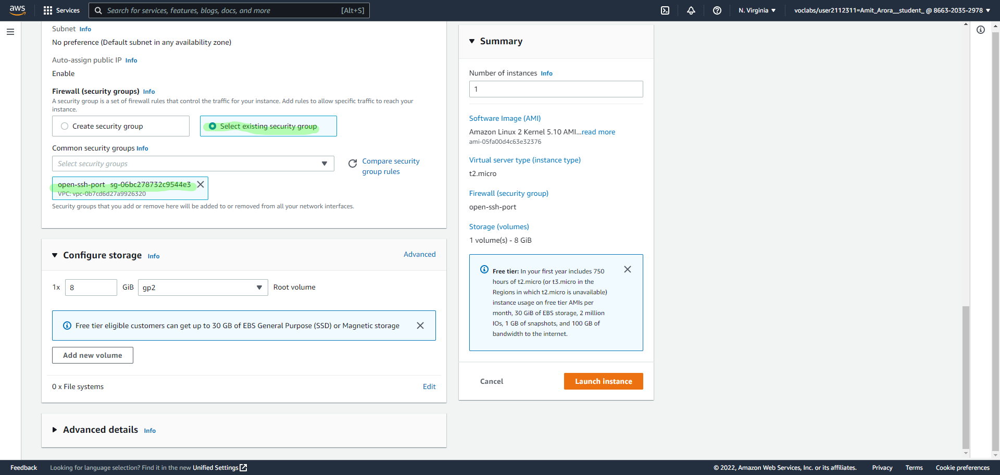
Leave all the other settings as default and click the Launch Instance button. 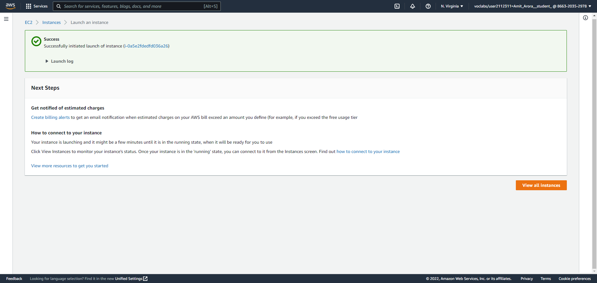
As the instance is being created you will see it transitioning from Pending to Running state in the Instances list. 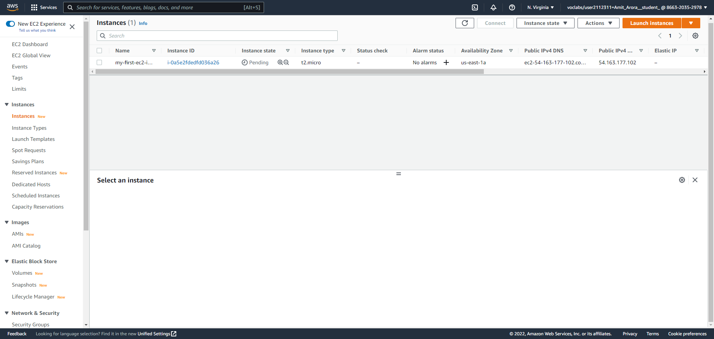 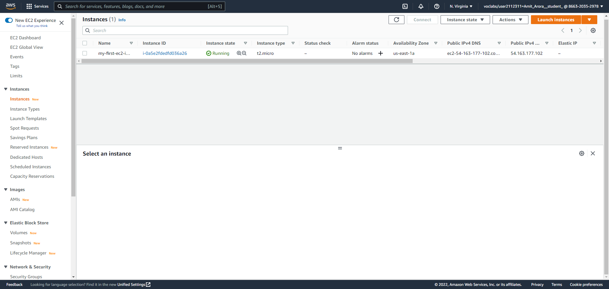
Click on the instance in the instances list and the bottom panel would display information about this VM. Copy the IPv4 DNS Name of this VM to the clipboard, we will use it for SSH’ing into this VM. 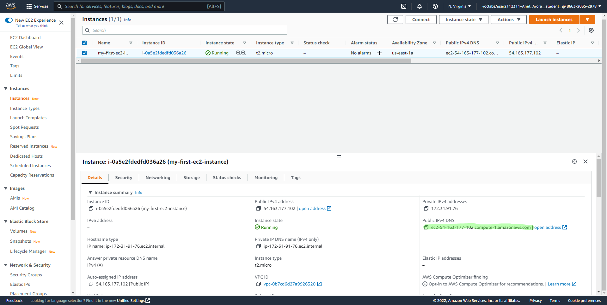
{kind=link}
{kind=link}
{kind=link}
{kind=link}
{kind=link}
{kind=link}
{kind=link}
{kind=link}
Task 5: SSH into the VM from your laptop
We are now ready to SSH into the VM we just created. This requires that we have a) Connectivity to the VM and b) credentials to authenticate ourselves to the VM. The connectivity part works because this VM has a public IPv4 address and the security group that we associated with it allows SSH traffic. The credentials part works because we created a key pair using the public key of the key pair we created. Let’s SSH into this VM now.
- Type the following command to ssh from your laptop to your VM.
The IP address and DNS name of your VM would be different everytime you stop and start your VM, so there is no need to save the IP address or DNS name, you can look it up from the AWS console as needed.
The following steps should the ssh command from a Windows machine, the command for a MAC is also the same. If you saved your SSH key in a path different from the default path (for your OS) then you would need to provide the path to your public key via the -i switch for the ssh command.
C:\Users\aroraai>ssh ec2-user@ec2-54-163-177-102.compute-1.amazonaws.com
Last login: Sat Sep 3 20:16:08 2022 from pool-173-73-254-94.washdc.fios.verizon.net
__| __|_ )
_| ( / Amazon Linux 2 AMI
___|\___|___|
https://aws.amazon.com/amazon-linux-2/
3 package(s) needed for security, out of 8 available
Run "sudo yum update" to apply all updates.
[ec2-user@ip-172-31-91-76 ~]$Check the instance metadata
An EC2 VM contains a built-in webserver which provides the metadata about the VM. This is useful when you programatically want to know (usually as part of an automation) what is the IP address of the VM, which region is it located in, the security group associated with it etc.
- Access the metadata. See this link for more information.
[ec2-user@ip-172-31-91-76 ~]$ curl http://169.254.169.254/latest/dynamic/instance-identity/document/
{
"accountId" : "866320352978",
"architecture" : "x86_64",
"availabilityZone" : "us-east-1a",
"billingProducts" : null,
"devpayProductCodes" : null,
"marketplaceProductCodes" : null,
"imageId" : "ami-05fa00d4c63e32376",
"instanceId" : "i-0a5e2fdedfd036a26",
"instanceType" : "t2.micro",
"kernelId" : null,
"pendingTime" : "2022-09-06T11:31:21Z",
"privateIp" : "172.31.91.76",
"ramdiskId" : null,
"region" : "us-east-1",
"version" : "2017-09-30"
}[ec2-user@ip-172-31-91-76 ~]$Add AWS CLI credentials to your VM
It is now time to save the AWS CLI credentials (from the steps above) locally into your VM so that the VM can talk to other AWS services.
Create the ~/.aws directory in your VM as using the mkdir ~/.aws command as shown in the screenshot below and then create a file called credentials in the ~/.aws directory. 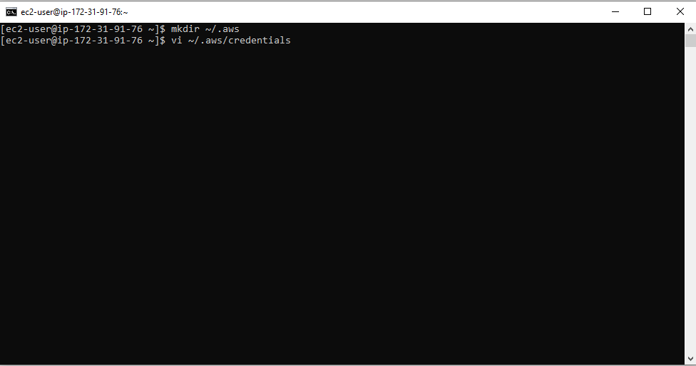
Copy paste the AWS CLI credentials saved from the previous steps into the ~/.aws/credentials file and then save and quit using the [Esc Key]:wq command. 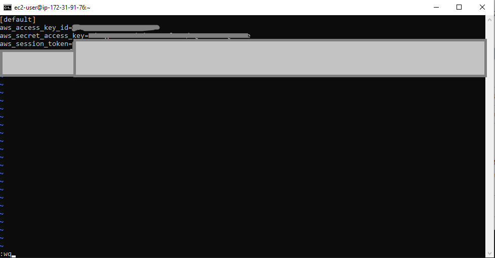
We will test if these credentials worked correctly when we create an S3 bucket and see if we can list that bucket from this VM in one the subsequent steps in this lab.
{kind=link}
{kind=link}
To stop/pause a VM
Stopping an instance is like shutting down your laptop. The data saved on the local disk on the VM is preserved. When the VM is in the stopped state you do not get billed for the compute (CPU/RAM) but you do get charged for the persistent storage.
- Go to the EC2 Dashboard. You can get here by clicking on Services in the top left and choosing EC2 under the Compute heading
- Click on the Instance ID of the running machine
- Click on the Instance State button on the top right
- Choose Stop Instance
To terminate a VM
Terminating a VM is like deleting it i.e. all compute and storage resources associated with the VM are gone and you no longer get billed for it. Use Terminate VM with caution.
- Go to the EC2 Dashboard. You can get here by clicking on Services in the top left and choosing EC2 under the Compute heading
- Click on the Instance ID of the running machine
- Click on the Instance State button on the top right
- Choose Terminate Instance
Task 6: Create an S3 bucket and upload a file to the bucket
Amazon S3 is an object storage service that offers industry-leading scalability, data availability, security, and performance. S3 stands for Simple Storage Service.
In the following steps we will create an S3 bucket and upload a file into the bucket. The bucket that we are creating are not public i.e. only users (people) and applications (code) with credentials to access the bucket and it’s contents can see it. Stated differently, you cannot see or access the contents of a bucket created by a fellow student and vice-versa, unless, they provide you access to the bucket.
Type S3 in the search bar on the AWS console. 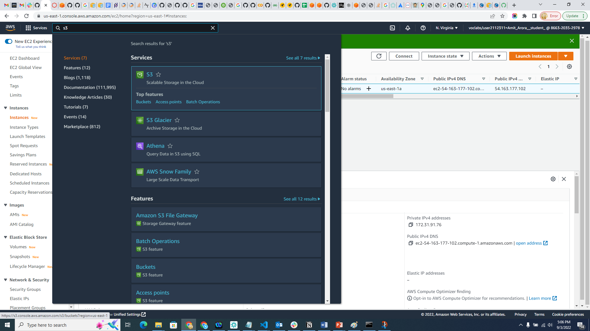
Click on the Create Bucket button. 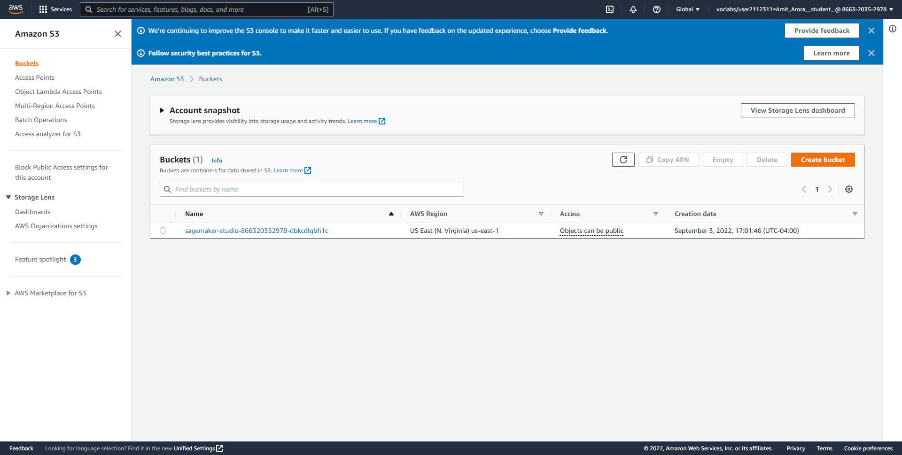
Give an appropriate name to your bucket and leave all the other settings as default.
{kind=link}
{kind=link}
Note that the bucket names are required to be globally unique i.e. not only can your bucket name be unique in your AWS account but it should be unique across all AWS accounts that exist.
A good choice for the bucket name for this class would be anly502-fall-2020-your-gu-netid.
{kind=link}
Once the bucket is created successfully, you should see it in the list of buckets in your account. 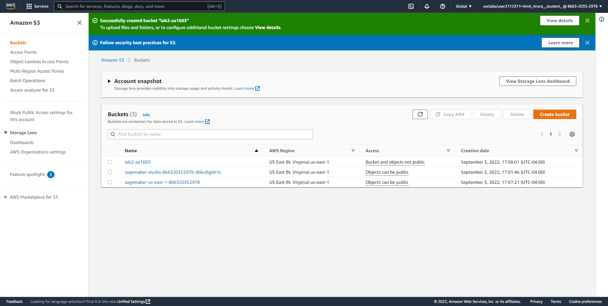
Now upload an object (file) from your laptop on to the bucket. The following screenshot shows a local file called StateNames.csv being uploaded into the bucket we just created. You can use any file from your laptop for this step. 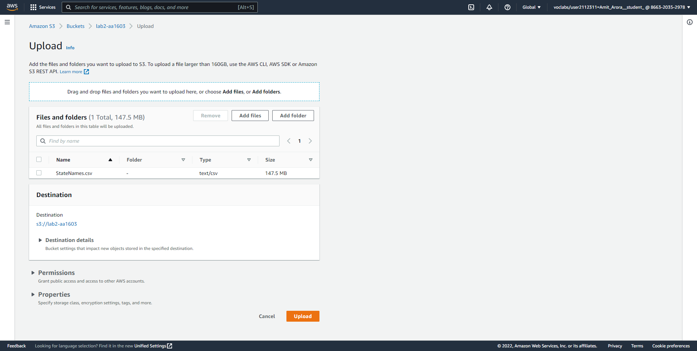
The upload may take a few seconds depending upon the size of the file being uploaded and the Internet connection speed. 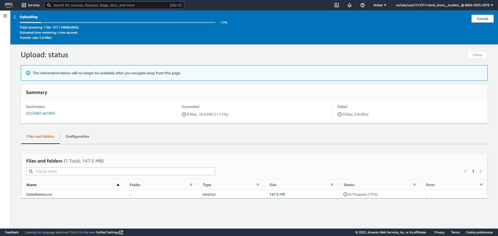
Once the file is uploaded you can see it in the list of objects in the bucket. 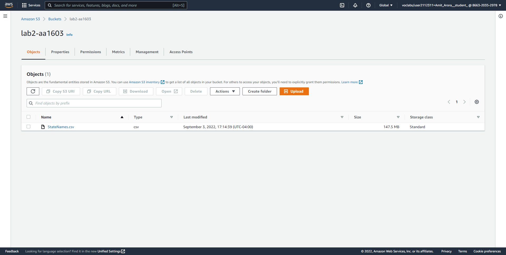
Click on the object you just uploaded to see it’s attributes such as it’s S3 URI. This S3 URI is what users and applications will use to access this object. 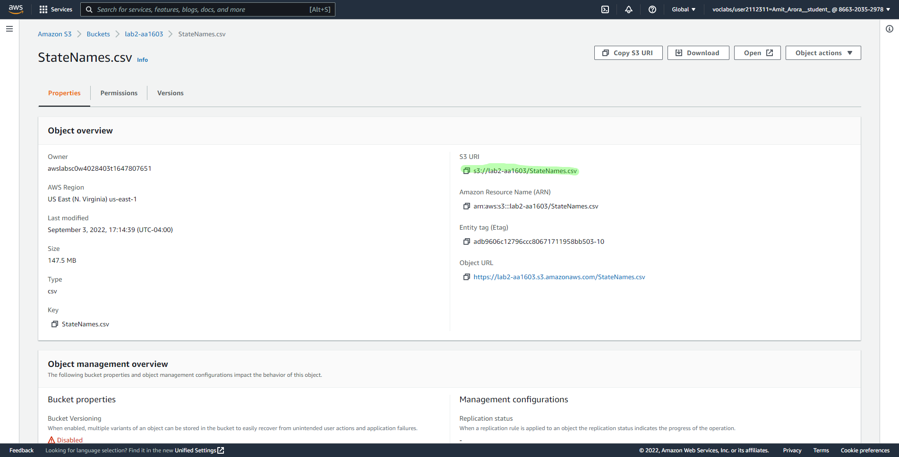
{kind=link}
{kind=link}
{kind=link}
{kind=link}
{kind=link}
Task 5: List the S3 bucket created from the EC2 VM
Power on the VM created in the steps above (find your way to the EC2 instance from the search bar, once on the Instances page, select your EC2 instance, from the Instance State menu click on Start Instance).
Once the VM is powered-on, SSH into the VM as before.
The aws s3 ls command and you should be able to see an output similar to the following (the following code snippet shows the bucket name as lab2-aa1603, you would see the name of the bucket that you just created).
[ec2-user@ip-172-31-91-76 ~]$ aws s3 ls
2022-09-03 21:08:01 lab2-aa1603
[ec2-user@ip-172-31-91-76 ~]$[ec2-user@ip-172-31-91-76 ~]$ aws s3 ls s3://lab2-aa1603/
2022-09-03 21:14:39 154696208 StateNames.csv
[ec2-user@ip-172-31-91-76 ~]$- Download the file from the bucket to the VM using the aws s3 cp command.
[ec2-user@ip-172-31-91-76 ~]$ aws s3 cp s3://lab2-aa1603/StateNames.csv .
download: s3://lab2-aa1603/StateNames.csv to ./StateNames.csv
[ec2-user@ip-172-31-91-76 ~]$ ls -ltr
total 151072
-rw-rw-r-- 1 ec2-user ec2-user 154696208 Sep 3 21:14 StateNames.csv
[ec2-user@ip-172-31-91-76 ~]$- As a quick exercise try downloading s3://bigdatateaching/statebabynames/StateNames.csv to your VM. Now, upload this file from your VM to the bucket you just created. We will be using this file as part of the assignment.
Task 7: Creat a SageMaker Studio Domain and Notebook (OPTIONAL)
The Amazon SageMaker Studio is one of the data science tools that we will be using during this course. We will set a SageMaker Studio domain and start a Jupyter Notebook as part of this task so that we can use it for future labs.
Navigate to SageMaker Studio. 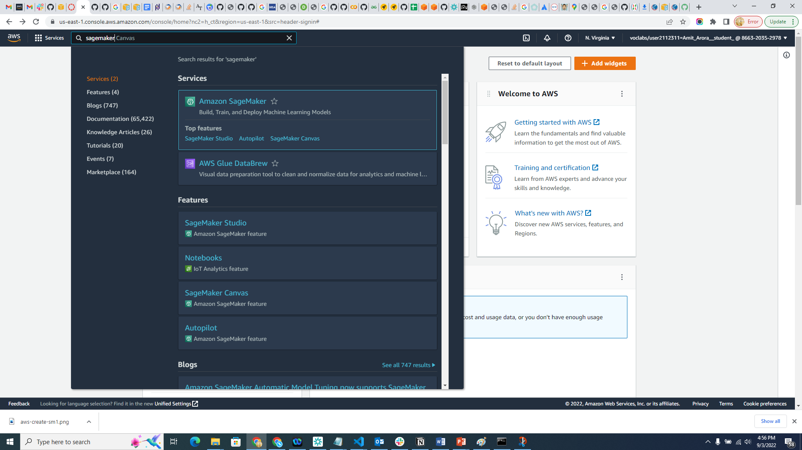
Create a new SageMaker Studio domain. You can leave all options as default. 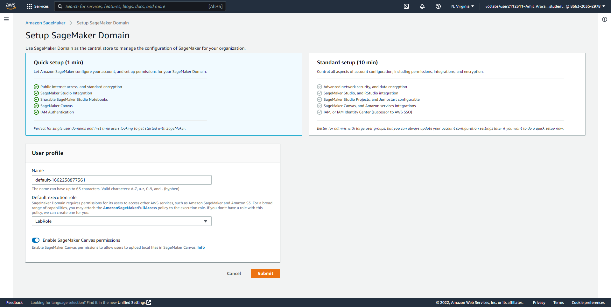
You will see several errors during this process, these can be ignore. 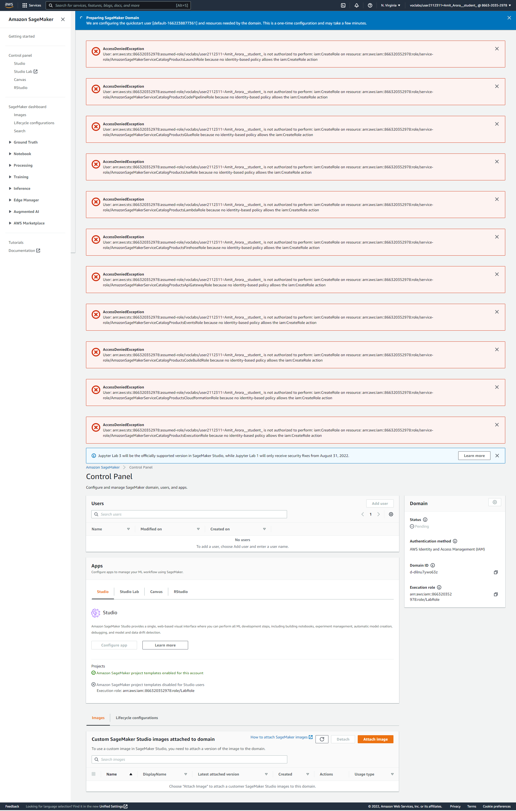
The domain creation process takes several minutes. Once the domain is ready you should see a screen like this. 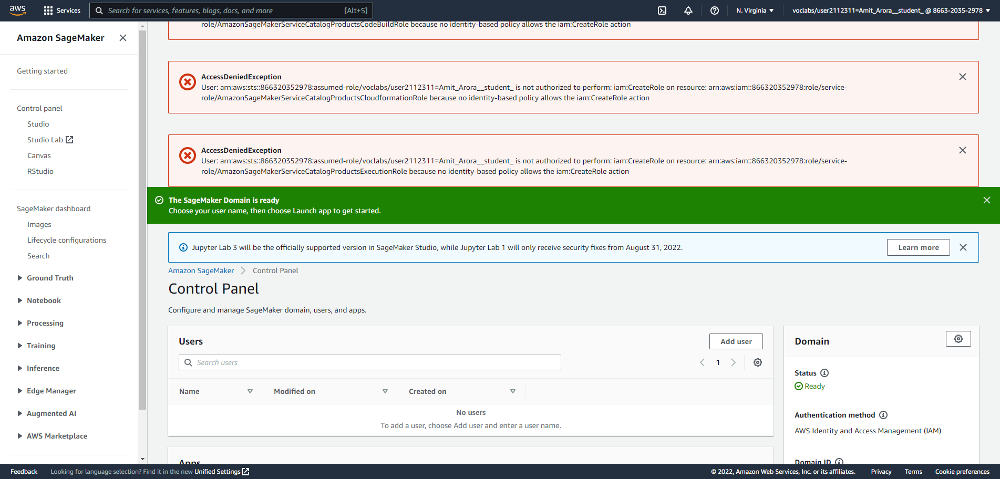
After the domain creation process is complete, we can launch the SageMaker studio app. 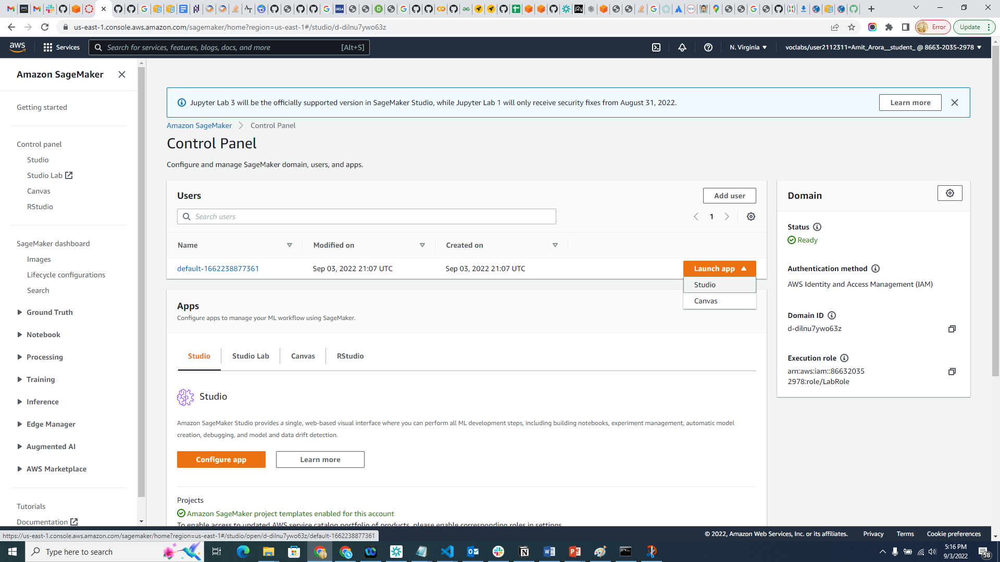
The SageMaker Studio app starting up. 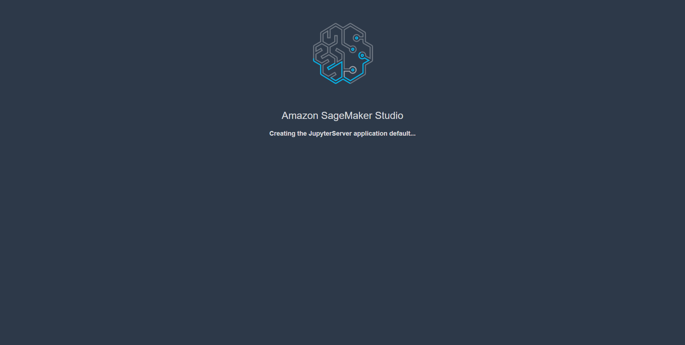
All done. 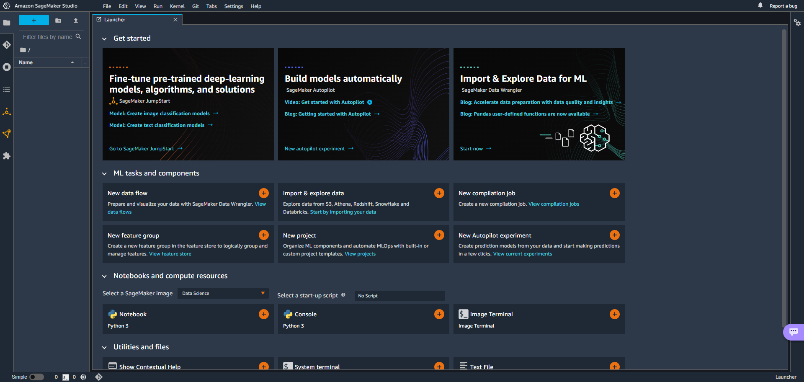
Create a new SageMaker Studio Notebook from the File -> New -> Notebook menu. 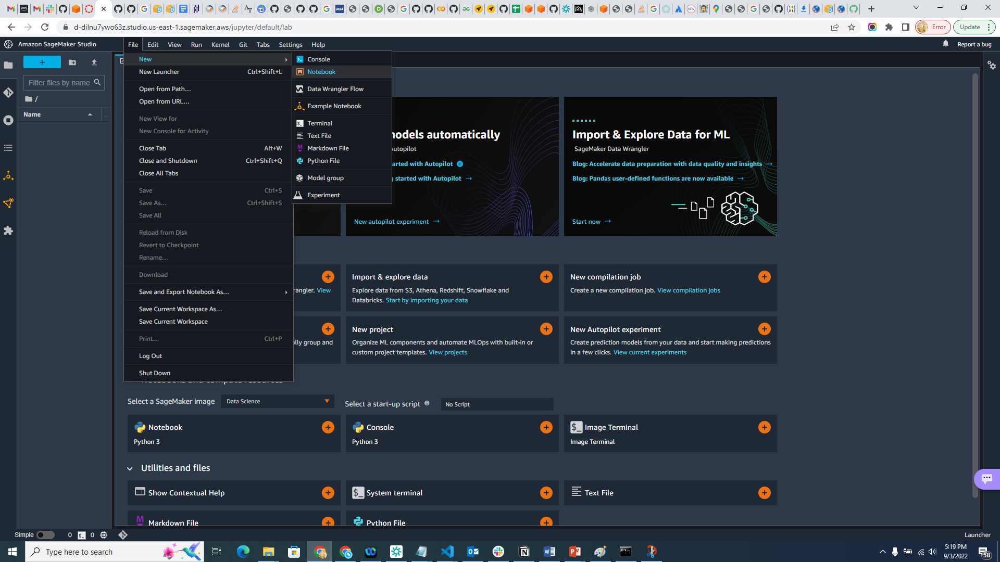
We can select different images and Python environments for the notebook we are creating, for now just use the default.
Started. The CPU and Memory on the top right corner represents the configuration of the VM that was created to host this notebook, note that we did not create this VM, but of course, it is there.
{kind=link}
{kind=link}
{kind=link}
{kind=link}
{kind=link}
{kind=link}
{kind=link}
{kind=link}
{kind=link}
{kind=link}
This is called a managed service, you get to work on the notebook without having to deal with the creation steps for the underlying infrastructure. You can easily change this configuration as per the requirements of the analytics/machine learning job you are running.
{kind=link}
Task 8: Use SageMaker Studio Notebook for analyzing a simple dataset (OPTIONAL)
We will analyze the StateNames.csv dataset that is now present in your S3 bucket using the SageMaker Studio Notebook we just created.
The URL of the git repo would be of the format shown in the screenshot below.
Once the repo is cloned, double click on the repo folder and then on the analytics.ipynb file in the repo. This will open the Jupyter notebook in a SageMaker Studio Notebook.
The notebook downloads the dataset from your S3 bucket and has some tasks for you to do. Complete tasks 2, 3, 4 and 5 marked in the notebook and checkin the completed notebook in the git repo.
{kind=link}
{kind=link}
{kind=link}
Shutting down SageMaker Studio
It is important to shutdown SageMaker Studio when not in use so that you do not get billed for it when you are not using it.
{kind=link}
{kind=link}
At the end of this lab:
Make sure you shutdown SageMaker Studio.
Make sure you shutdown EC2 VM.
Make sure you have ended the lab in AWS Educate by pressing the End Lab button.